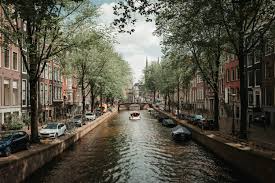

Amszterdam
Rijksmuseum
A Rijksmuseum Hollandia egyik legismertebb és legnagyobb művészeti múzeuma, amely a 17. századi aranykor mesterműveinek ad otthont. A gyűjtemény legfontosabb darabjai közé tartozik Rembrandt Éjjeli őrjárat című festménye, valamint Vermeer és Frans Hals lenyűgöző alkotásai. Az épület maga is műalkotás, egy neogótikus csoda, amelyet Pierre Cuypers tervezett. A múzeum belső tere modern, mégis tiszteletben tartja a történelmi atmoszférát. A látogatók a holland történelem és kultúra mélyebb megértésével távoznak.

Amszterdam csatornarendszere
Amszterdam csatornái az UNESCO világörökség részei, és a város jelképei. A 17. században épített csatornarendszer a kereskedelem fellendülésének idején készült, és máig tökéletes példája a várostervezésnek. Sétahajókázás közben a látogatók megcsodálhatják a régi kereskedőházakat, a díszes hidakat és a vízparti élet nyugalmát. Az esti órákban a kivilágított csatornák különösen romantikus látványt nyújtanak.
Vondelpark
A Vondelpark Amszterdam legnagyobb és legismertebb parkja, amely évente több millió látogatót fogad. Ez a nyüzsgő város zöld oázisa, ahol a helyiek és a turisták egyaránt élvezhetik a természet nyugalmát. A park sétányai, tavai és kávézói ideális helyszínt biztosítanak a pihenéshez. A nyári hónapokban szabadtéri színházi előadások és koncertek is várják a látogatókat.